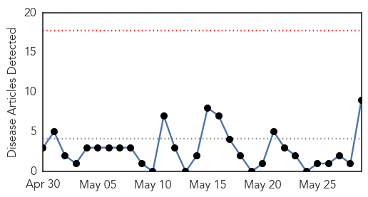
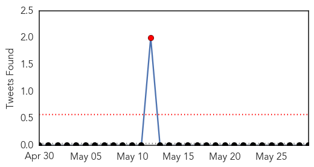
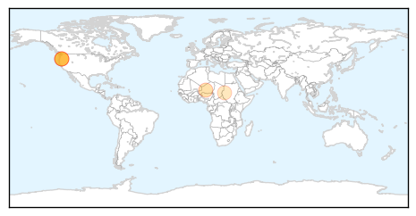

Measles
30-Day Web Trend
0 alerts, 0 warnings

30-Day Twitter Trend
0 alerts, 0 warnings

Article Locations

Article Confidences

Top Articles:
- 0.983
- Measles Vaccinations! Take One for the Team
- 0.976
- No new SEQ measles cases but authorities urge vigilance
- 0.953
- 5 Facts About Measles Outbreak at Disneyland
- 0.919
- Firefighters involved in measles scare
- 0.912
- Measles Case Confirmed In New Jersey
- 0.853
- [Feature] In Vietnam, an anatomy of a measles outbreak
- 0.653
- County Health Officer Focuses on Local Community
- 0.590
- Warning of measles risk in Auckland
- 0.565
- 96% of EU rubella cases reported in one country
- 0.562
- Confirmed Measles Case Visits Auckland
- 0.550
- Slowly and steadily, Somaliland builds its health system
- 0.509
- Financial Impact of Measles Outbreak at Disneyland
Top Tweets:
-
No tweets found for May 29, 2015
Meningitis
30-Day Web Trend
0 alerts, 0 warnings

30-Day Twitter Trend
1 alerts, 0 warnings

Article Locations
Article Confidences

Top Articles:
- 0.984
- Meningococcal disease in Niger
- 0.983
- Hays elementary school reports viral meningitis case
- 0.900
- Seventh case of meningococcal disease traced to U. of Oregon cam
- 0.792
- University of Oregon meningitis outbreak grows; student's father diagnosed
- 0.764
- Meningitis cases, drinking water shortage in Khartoum - Sudan
- 0.711
- 7th case of meningococcal disease linked to UO outbreak
- 0.654
- 7th case of meningococcal linked to UO outbreak
- 0.535
- 7th meningitis case linked to UO under investigation
- 0.525
- 'This outbreak is not over': Meningitis case in UO dad
Top Tweets:
-
No tweets found for May 29, 2015